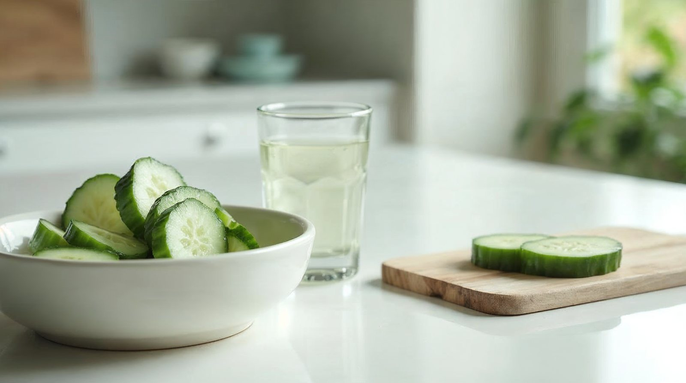
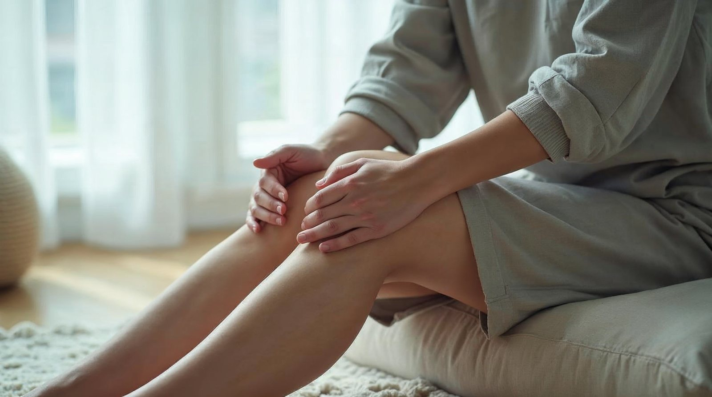
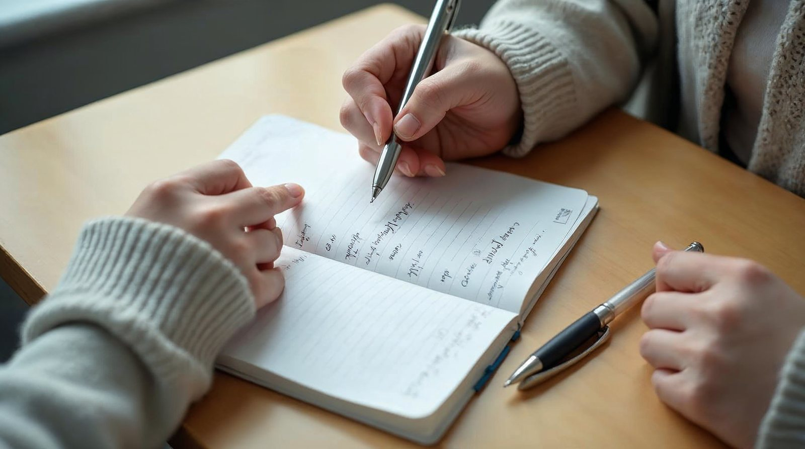
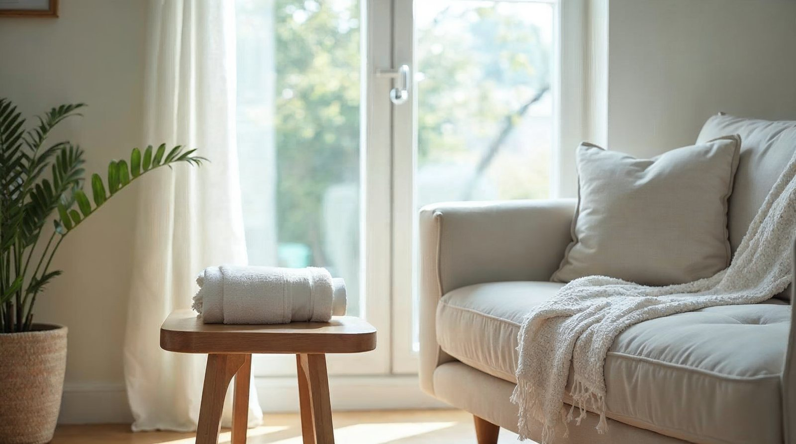

이종호 한의사 감수좋은꿈참사랑한의원 대표원장 (한의사 면허번호 19769)발행 2026-11-23 · 수정 2026-11-26
이 글의 차례
- 왜 이런 불편이 생길 수 있나요
- 먼저 이렇게 여쭙니다
- 스스로 점검해 보세요
- 체수분 숫자와 실제 붓기는 왜 다르게 느껴질까요?
- 붓기와 헷갈리기 쉬운 경우는 무엇인가요?
- 일상에서 먼저 해 볼 수 있는 것
- 왜 저녁마다 다리가 무거워질까요?
- 붓기를 줄이려다 놓치기 쉬운 것
- 상황별 예시
- 얼마나 지켜보고 언제 상담할까요
- 하루 붓기 리듬은 이렇게 적어 보세요
- 한의원에서 함께 살필 수 있는 경우
- 진료실에서는 이렇게 살핍니다
- 계절과 생활에 따라 붓기는 이렇게 달라집니다
- 다시 오시면 무엇을 비교하나요?
- 이렇게 기록해 오시면 상담이 쉬워집니다
- 이런 증상은 먼저 확인이 필요합니다
- 함께 읽으면 좋은 글
결과지의 체수분·부종 항목은 그날의 식사와 생활에 따라 흔들릴 수 있어, 한 번의 숫자보다 언제 어디가 붓는지와 함께 보는 것이 중요합니다. 다만 한쪽 다리만 붓거나 숨이 함께 찬다면 생활 습관보다 다른 원인을 먼저 확인해야 합니다.
좋은꿈참사랑한의원에서 쓰는 인바디 770 결과지에는 체수분과 함께, 세포외수분비처럼 몸속 수분이 어떻게 나뉘어 있는지 보여 주는 칸이 있습니다. 이 칸의 기준은 나이와 몸 상태에 따라 달라 이 글에서 숫자로 정하지 않고, 진료 때 결과지의 표준 범위 표시를 함께 보며 설명드립니다.
아래에서는 붓기를 어떻게 적어 두면 좋은지, 며칠 지켜봐도 되는 경우와 바로 확인해야 하는 경우를 나누어 정리했습니다.
왜 이런 불편이 생길 수 있나요
- 짠 음식과 국물을 많이 먹으면 몸이 수분을 붙잡아 두기 쉽습니다.
- 오래 서 있거나 앉아 있으면 다리 쪽에 수분이 모이기 쉽습니다.
- 생리 전후나 잠이 부족한 날에 붓기를 더 느끼는 분이 많습니다.
- 심장, 신장, 갑상선 문제나 일부 약 때문에 붓는 경우도 있어 오래가면 검사가 필요할 수 있습니다.
- 결과지의 체수분 칸은 그날 마신 물, 짠 음식, 측정 전 운동과 자세에 따라 달라질 수 있어, 한 번의 숫자만으로 붓기의 원인을 판단하지 않습니다.
- 더운 날이나 버스·비행기를 오래 타는 날에 다리 붓기를 더 느끼는 분도 있습니다.
먼저 이렇게 여쭙니다
- 주로 언제, 어디가 붓나요?
- 하루에 오래 서 있거나 앉아 있는 편인가요?
- 짠 음식이나 국물을 자주 드시나요?
- 소변 양이나 색에 변화가 있나요?
- 최근 새로 드시기 시작한 약이 있나요?

스스로 점검해 보세요
- 저녁이면 양말 자국이 깊게 남고 신발이 낀다
- 아침에 눈꺼풀이나 얼굴이 부어 있는 날이 잦다
- 정강이를 손가락으로 눌렀을 때 자국이 한동안 남는다
- 한쪽 다리만 더 붓거나 종아리가 당기고 아프다
- 붓기와 함께 숨이 차거나 누우면 답답하다
- 소변 양이 줄거나 거품이 많아졌다
- 생리 전이나 짠 음식을 먹은 다음 날에만 붓는다
첫째·둘째·일곱째 항목처럼 이유가 짐작되고 하루 이틀 사이 가라앉는 붓기라면 며칠 기록하며 지켜볼 수 있습니다. 셋째 항목이 매일 이어지거나 넷째부터 여섯째 항목에 해당하면 생활 관리보다 확인이 먼저입니다.
체수분 숫자와 실제 붓기는 왜 다르게 느껴질까요?
결과지의 체수분은 몸 전체에 든 물의 양을 추정한 값이라, 다리처럼 한 부위에 물이 몰린 느낌과 늘 같이 움직이지는 않습니다. 몸 전체의 물은 그대로인데 낮 동안 서 있느라 다리 쪽으로 내려온 것만으로도 저녁 붓기는 크게 느껴집니다.
그래서 저는 숫자 하나보다 세포 안과 밖의 수분이 어떻게 나뉘었는지 보여 주는 칸과 부위별 칸을 함께 보고, 언제 쟀는지를 꼭 확인합니다. 저녁에 다리가 붓는 분이 아침에 쟀다면 결과지에는 붓기가 잘 드러나지 않을 수 있습니다.
반대로 붓는 느낌은 크지 않은데 결과지의 수분 균형 칸이 표준 범위를 벗어나 있다면, 그날 조건을 되짚어 보고 같은 조건에서 다시 재어 확인합니다. 그래도 계속 벗어나 있다면 내과 검사를 함께 권해 드립니다.
붓기와 헷갈리기 쉬운 경우는 무엇인가요?
- 살이 찐 것: 지방은 하루 사이에 크게 변하지 않아, 아침저녁으로 차이가 나는 붓기와 구별됩니다.
- 근육 뭉침: 종아리가 단단하고 당기지만 눌러도 자국이 남지 않는 경우가 많습니다.
- 정맥이 늘어난 경우: 오래 서 있으면 다리에 핏줄이 도드라지고 무거워지며, 다리를 올리면 덜해지는 편입니다.
- 관절 부위 붓기: 발목이나 무릎 한 곳만 붓고 아프거나 열이 나면 관절 쪽 원인을 먼저 살핍니다.
예를 들어 저녁마다 양쪽 종아리가 무겁지만 아침이면 가라앉는 경우라면 생활 자세를 먼저 살피고, 한쪽 발목만 부어 걷기 불편한 경우라면 그 부위 진찰을 먼저 합니다.

일상에서 먼저 해 볼 수 있는 것
- 국물은 건더기 위주로 먹고 짠 음식 줄이기
- 오래 앉아 있을 때 한 시간에 한 번 발목 돌리기
- 잘 때 다리를 조금 높여 두기
- 물은 한꺼번에 많이보다 자주 조금씩 마시기
- 아침과 저녁에 정강이를 손가락으로 눌러 자국이 남는지 메모하기
붓기 기록은 아침과 저녁 두 번, 짧게 남기면 충분합니다. 정강이 자국이 남는지, 양말 자국이 얼마나 깊은지, 그날 짠 음식과 서 있던 시간을 한 줄씩 적고, 가능하면 같은 자리에서 같은 각도로 사진을 찍어 두세요. 인바디 결과지의 체수분 칸은 이런 기록과 함께 볼 때 뜻이 더 분명해집니다.
왜 저녁마다 다리가 무거워질까요?
우리 몸의 물은 중력을 따라 아래로 모이려는 성질이 있습니다. 걸을 때는 종아리 근육이 펌프처럼 움직여 다리의 피와 물을 위로 올려 보내는데, 오래 서 있거나 앉아 있으면 이 펌프가 쉬게 되어 발목과 종아리에 물이 고이기 쉽습니다.
그래서 같은 하루라도 자주 걷고 움직인 날은 덜 붓고, 한자리에 오래 있던 날은 더 붓습니다. 짠 음식은 몸이 물을 붙잡게 하고, 잠이 부족하면 다음 날 아침 얼굴 붓기로 이어지기도 합니다.
저는 이런 흐름을 몸의 순환이 그날 하루 어떻게 돌았는지 보여 주는 신호로 보고, 맥과 혀, 손발의 온기와 함께 살핍니다. 몸이 차고 소화가 느린 분은 붓기도 더 오래가는 경우가 있어 그 이야기도 함께 여쭙습니다.
붓기를 줄이려다 놓치기 쉬운 것
- 물을 크게 줄이면 오히려 몸이 물을 붙잡으려 하고, 변비나 두통으로 이어질 수 있습니다.
- 붓기를 빼 준다고 알려진 차나 보조제를 스스로 많이 드시면 몸의 수분과 전해질 균형이 흔들릴 수 있습니다.
- 꽉 끼는 압박 양말을 오래 신으면 피부가 쓸리거나 저림이 생길 수 있어, 처음이라면 진료 때 함께 상의합니다.
드시는 약이 있다면 붓기 때문에 스스로 바꾸지 마시고, 처방한 병원에 먼저 붓기를 알려 주세요.
상황별 예시
- 예를 들어 하루 종일 서서 일하는 직장인이라면, 쉬는 시간마다 까치발 들기와 발목 돌리기를 해 보시고 저녁에 다리를 조금 높여 쉬는 시간을 정해 두세요. 붓기 기록을 근무일과 쉬는 날로 나눠 적어 오시면 생활과의 관계를 보기 쉽습니다.
- 예를 들어 야간 자습으로 오래 앉아 있는 수험생이라면, 한 시간에 한 번 일어나 복도를 걷고 늦은 밤 라면이나 짠 간식을 줄이는 것부터 시작해 보세요. 아침 얼굴 붓기가 어떻게 달라지는지 적어 두면 함께 살피기 좋습니다.
- 예를 들어 혈압약을 드시는 어르신이 최근 발목이 붓기 시작했다면, 약을 스스로 줄이지 말고 처방한 병원에 붓기를 먼저 알려 주세요. 약 이름과 시작한 날짜를 적어 오시면 진료 때도 함께 살핍니다.

얼마나 지켜보고 언제 상담할까요
- 짠 음식을 먹었거나 오래 서 있던 날 뒤의 붓기가 하룻밤 자고 나면 가라앉는다면, 생활 관리를 하며 1~2주 동안 시간대와 부위를 적어 보세요.
- 2~3주가 지나도 붓기가 그대로이거나 점점 넓어진다면 내과 검사와 함께 진료를 받아 보시길 권합니다.
하루 붓기 리듬은 이렇게 적어 보세요
일주일만 적어 보아도 붓기의 모양이 꽤 분명해집니다. 아침에 일어나 세수할 때 얼굴과 눈꺼풀, 저녁에 양말을 벗을 때 발목과 정강이를 보고, 붓기를 0(없음)에서 3(신발이 낄 정도)까지 숫자로 적어 두세요.
그 옆에는 그날 짠 음식이나 국물을 먹었는지, 서 있거나 앉아 있던 시간, 잠든 시각, 생리 주기를 한 단어씩 붙이면 됩니다. 쉬는 날과 일하는 날의 차이가 보이면 생활 쪽 원인을 찾기가 훨씬 쉬워집니다.
인바디를 재신 날은 그 칸에 표시를 해 두세요. 저는 그 표시와 결과지의 체수분 칸을 나란히 놓고, 숫자가 붓기 기록과 같은 방향으로 움직였는지를 함께 봅니다.
한의원에서 함께 살필 수 있는 경우
- 저녁마다 다리가 무겁고 붓는 경우 생활 자세와 순환을 함께 살핍니다.
- 생리 전후로 붓기가 심한 경우 주기와 몸의 변화를 함께 살핍니다.
- 붓기와 함께 피로가 큰 경우 잠과 식사 리듬을 함께 살핍니다.
좋은꿈참사랑한의원에서는 모든 분께 맥부터 짚고, 맥을 짚으면서 붓는 시간대와 부위, 소변과 잠을 여쭙습니다. 혀를 보고 정강이와 발목을 살핀 뒤, 필요하다고 판단될 때 인바디 770으로 체수분 흐름을 확인해 지난 기록과 비교합니다.
결과지는 표준 범위 표시와 적어 오신 붓기 기록을 함께 보며 설명드리고, 생활 관리와 침, 한약 상담 등을 정합니다. 다음 진료 때 무엇을 다시 볼지도 정해 드립니다.
처음 오시면 접수 때 드시는 약과 몸속 전자 의료기기가 있는지 먼저 말씀해 주세요. 측정 비용이나 보험 적용 여부는 방문 전 전화로 확인해 주세요.
진료실에서는 이렇게 살핍니다
붓기 때문에 오신 날은 먼저 맥을 짚고, 혀의 색과 두께, 혀 가장자리에 이 자국이 있는지 봅니다. 그다음 정강이와 발목을 손가락으로 눌러 자국이 얼마나 남고 얼마 만에 돌아오는지, 양쪽이 같은지를 확인합니다.
손발의 온기와 배를 눌렀을 때의 느낌, 소변과 대변, 땀, 잠의 리듬도 함께 여쭙습니다. 붓기는 한 부위의 문제로 보이지만, 몸 전체의 순환과 소화, 잠이 얽혀 있는 경우가 많기 때문입니다.
이렇게 살핀 뒤 생활에서 먼저 바꿀 것과 침, 한약 상담 같은 방법을 정합니다. 한약을 상담할 때는 드시는 약을 모두 확인하고, 임신 중이거나 가능성이 있다면 먼저 말씀해 주세요. 진찰에서 내과 검사가 먼저라고 판단되면 그 이유와 함께 안내해 드립니다.
계절과 생활에 따라 붓기는 이렇게 달라집니다
여름에는 더위로 혈관이 넓어지고 땀으로 물이 빠져나가 몸의 수분 흐름이 흔들리기 쉬워, 다리 붓기를 더 느끼는 분이 많습니다. 겨울에는 움직임이 줄고 국물 음식이 늘어 아침 얼굴 붓기를 호소하는 분이 늘어납니다.
명절이나 여행처럼 짠 음식과 앉아 있는 시간이 함께 늘어나는 때에도 붓기가 심해지기 쉽습니다. 이런 시기에는 붓기 기록에 따로 표시를 해 두시면 평소의 붓기와 구분해서 볼 수 있습니다.
예를 들어 장거리 버스를 탄 다음 날 양쪽 발목이 부었다가 하루 이틀 사이 가라앉았다면 생활 쪽 원인을 먼저 떠올려 볼 수 있습니다. 하지만 한쪽 종아리만 붓고 아프다면 기다리지 말고 먼저 확인을 받아 보세요.
다시 오시면 무엇을 비교하나요?
다시 오신 날에는 적어 오신 붓기 기록의 숫자가 첫 주와 비교해 어떻게 달라졌는지부터 봅니다. 아침 얼굴 붓기와 저녁 발목 붓기를 따로 보고, 짠 음식이나 서 있던 시간이 줄어든 주에 붓기도 함께 줄었는지를 나란히 살핍니다.
인바디를 다시 쟀다면 지난번과 같은 시간대에 쟀는지 확인한 뒤 체수분 칸과 수분 균형 칸을 비교합니다. 생활을 바꿔도 붓기 기록이 그대로이거나 오히려 넓어졌다면, 그때는 내과 검사를 먼저 권해 드립니다.
반대로 붓기 숫자가 줄었다면 어떤 생활 변화가 도움이 되었는지 함께 짚어 보고, 그 습관을 이어 가기 쉬운 방법을 정합니다. 기록이 쌓일수록 내 몸이 언제 붓는지 스스로도 알아차리기 쉬워집니다.
붓기 기록은 길게 쓰지 않아도 됩니다. 하루 한 줄이 이어지는 것이 가장 쓸모 있습니다.

이렇게 기록해 오시면 상담이 쉬워집니다
- 붓는 시간대와 부위(사진이 있으면 더 좋습니다)
- 하루 소변 횟수나 색의 변화
- 생리 주기와 붓기의 관계
- 최근 시작하거나 바꾼 약
이런 증상은 먼저 확인이 필요합니다
- 한쪽 다리만 갑자기 붓고 아프거나 붉어지는 경우
- 붓기와 함께 숨이 차거나 누우면 더 답답한 경우, 소변 양이 갑자기 크게 줄어든 경우
이런 신호가 있으면 한의원보다 가까운 병원이나 응급실을 먼저 찾으세요.
함께 읽으면 좋은 글
- 저녁마다 다리가 붓고 양말 자국이 깊게 남을 때, 부종은 무엇을 나눠 살피나요?
- 오래 앉아 공부하면 다리가 붓고 저릴 때는 무엇을 살피나요?
- 대사 관리를 할 때 물은 하루에 얼마나 마셔야 하나요?

여쭙는 것
- 주로 언제, 어디가 붓나요?
- 하루에 오래 서 있거나 앉아 있는 편인가요?
- 짠 음식이나 국물을 자주 드시나요?
생활에서 해 볼 것
- 국물은 건더기 위주로 먹고 짠 음식 줄이기
- 오래 앉아 있을 때 한 시간에 한 번 발목 돌리기
- 잘 때 다리를 조금 높여 두기
한의원에서 함께 살필 것
- 저녁마다 다리가 무겁고 붓는 경우 생활 자세와 순환을 함께 살핍니다.
- 생리 전후로 붓기가 심한 경우 주기와 몸의 변화를 함께 살핍니다.
- 붓기와 함께 피로가 큰 경우 잠과 식사 리듬을 함께 살핍니다.
먼저 확인이 필요한 신호
- 한쪽 다리만 갑자기 붓고 아프거나 붉어지는 경우
- 붓기와 함께 숨이 차거나 누우면 더 답답한 경우, 소변 양이 갑자기 크게 줄어든 경우
한눈에 보는 표
| 구분 | 핵심 |
|---|---|
| 여쭙는 것 | 주로 언제, 어디가 붓나요? 하루에 오래 서 있거나 앉아 있는 편인가요? |
| 생활에서 해 볼 것 | 국물은 건더기 위주로 먹고 짠 음식 줄이기 오래 앉아 있을 때 한 시간에 한 번 발목 돌리기 |
| 한의원에서 함께 살필 것 | 저녁마다 다리가 무겁고 붓는 경우 생활 자세와 순환을 함께 살핍니다. 생리 전후로 붓기가 심한 경우 주기와 몸의 변화를 함께 살핍니다. |
| 먼저 확인이 필요한 신호 | 한쪽 다리만 갑자기 붓고 아프거나 붉어지는 경우 붓기와 함께 숨이 차거나 누우면 더 답답한 경우, 소변 양이 갑자기 크게 줄어든 경우 |
자주 묻는 질문
부종 수치가 높으면 병이 있는 건가요?
생활 습관으로도 달라질 수 있지만, 계속되거나 다른 증상이 함께 있으면 내과 검사가 필요할 수 있습니다.
물을 적게 마시면 덜 붓나요?
물을 줄이기보다 짠 음식을 줄이고 자주 움직이는 것을 먼저 권합니다. 심장이나 신장 질환으로 물 양을 조절하라는 안내를 받았다면 그 안내를 따르세요.
생리 전에만 붓는 것도 살펴볼 수 있나요?
네. 주기와 함께 붓기의 변화를 기록해 오시면 몸의 흐름을 함께 살필 수 있습니다.
아침에 얼굴이 붓는 것도 같은 이유인가요?
전날 짠 음식이나 늦은 야식, 짧은 잠 뒤에 아침 붓기를 느끼는 분이 많습니다. 매일 심하게 붓는다면 내과 검사를 함께 권합니다.
좋은꿈참사랑한의원은 재진 때 지난번 이야기부터 이어서 여쭙니다. 진료시간과 예약은 오시는 길에서 확인하세요.
어디서 상담받을 수 있나요?
좋은꿈참사랑한의원은 서울 동작구 만양로2길 2 신성빌딩 3층·5층(서울 동작구 상도동, 7호선 상도역 3번 출구 근처)에 있습니다. 한의사 3명(이종호 대표원장, 조영기 수석진료원장, 정원영 진료원장)이 진료합니다. 진료시간은 평일 09:30~20:00(점심 13:00~14:00), 토·일·공휴일 09:30~15:00이며, 방문 전 전화로 확인을 권합니다. 예약은 네이버 예약, 카카오톡 상담, 전화 02-815-7510로 받습니다.
이 글은 일반적인 건강 정보이며 개인의 진단이나 치료를 대신하지 않습니다. 증상이 있거나 복용 중인 약이 있다면 진료를 통해 확인하세요. 치료 효과는 개인마다 다를 수 있습니다.
작성 기준: 일반적으로 알려져 있는 건강 정보를 참고해 정리했습니다(대표원장 감수). 증상 기록은 1~2주 동안 하루 1회, 비슷한 시간에 적어 오시면 지난 상태와 비교하기 쉽습니다.